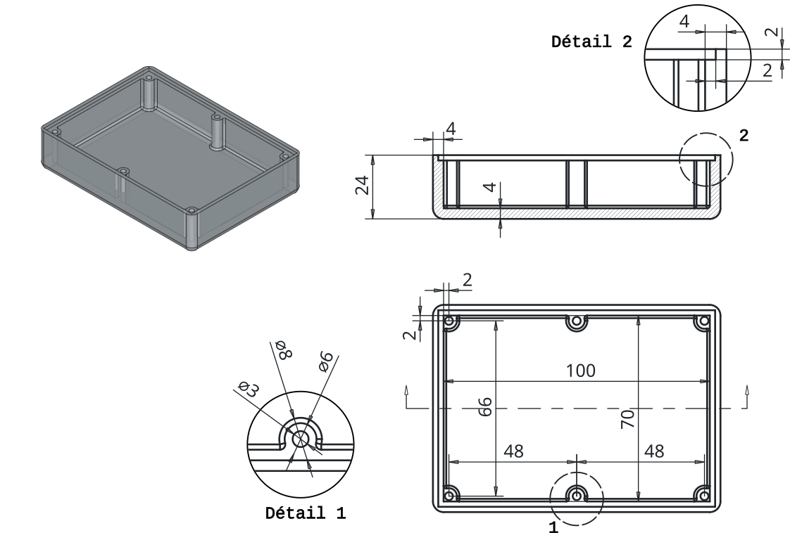
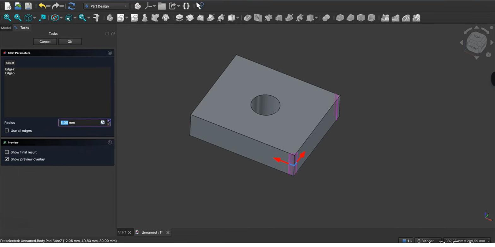

Afronden & afkanten (fillet & chamfer)Congés & chanfreins (fillet & chamfer)Fillets & chamfers
Scherpe randen voelen niet alleen onaangenaam aan, ze zijn ook zwakker en printen minder mooi. Met fillet (afronden) en chamfer (afkanten) werk je je behuizing af: comfortabeler in de hand, sterker op de kritieke plekken, en beter printbaar.Les arêtes vives sont désagréables, plus fragiles et s'impriment moins bien. Avec congé (arrondi) et chanfrein (biseau), on finit le boîtier : plus agréable, plus solide, mieux imprimable.Sharp edges feel unpleasant, are weaker, and print less cleanly. With fillet (rounding) and chamfer (bevelling) you finish your enclosure: nicer to hold, stronger where it matters, and better to print.
- randen afronden met fillet (straal)arrondir des arêtes avec un congé (rayon)round edges with a fillet (radius)
- randen afkanten met chamfer (afstand)biseauter des arêtes avec un chanfrein (distance)bevel edges with a chamfer (distance)
- meerdere randen tegelijk selecterensélectionner plusieurs arêtes à la foisselect several edges at once
- fillet/chamfer slim inzetten voor een beter printresultaatutiliser congé/chanfrein pour mieux imprimeruse fillet/chamfer for a better print
Workbench: Part Design. Werk op randen of een vlak.Atelier : Part Design. Arêtes/face.Workbench: Part Design. Edges or a face.
Commando: Part Design → Een opmaakfunctie toepassen → Afronding of … → Afkanting. Typ straal (fillet) of afstand (chamfer).Commande : Part Design → Habillage → Congé ou … → Chanfrein. Rayon ou distance.Command: Part Design → Apply a dress-up feature → Fillet or … → Chamfer. Radius or distance.
- Klik een rand (Ctrl voor meer, of een vlak).Arête (Ctrl/face).Edge (Ctrl/face).
- Kies Afronding of Afkanting.Congé ou Chanfrein.Fillet or Chamfer.
- Straal 2,5 of afstand 0,6 → OK.Rayon 2,5 / distance 0,6.Radius 2.5 / distance 0.6.
01Fillet: randen afrondenCongé : arrondirFillet: rounding edges
Een fillet vervangt een scherpe rand door een afgeronde overgang met een bepaalde straal. Je selecteert één of meer randen (of een heel vlak), kiest de fillet-functie en geeft een straal op. Hoe je selecteert: klik een rand aan; houd Ctrl ingedrukt om meerdere randen toe te voegen. Lachiver rondt zo bijvoorbeeld vier verticale randen tegelijk af.Un congé remplace une arête vive par un arrondi d'un certain rayon. Sélectionnez une ou plusieurs arêtes (avec Ctrl), choisissez Congé et donnez le rayon.A fillet replaces a sharp edge with a rounded transition of a given radius. Select one or more edges (hold Ctrl to add more), choose Fillet and give the radius.


02Chamfer: randen afkantenChanfrein : biseauterChamfer: bevelling edges
Een chamfer vervangt een scherpe rand door een schuin afgesneden vlakje. In plaats van een straal geef je een afstand op (hoe ver het vlakje "inhapt"). De selectie werkt net als bij fillet: één of meer randen, eventueel met Ctrl. Fillet geeft een ronde overgang, chamfer een rechte schuine kant.Un chanfrein remplace l'arête par un petit pan coupé : on donne une distance, pas un rayon. Sélection identique (Ctrl). Congé = arrondi, chanfrein = pan droit.A chamfer replaces a sharp edge with a flat angled face: you give a distance, not a radius. Selection works like fillet (Ctrl). Fillet = rounded, chamfer = straight bevel.
Fillet = straal (rond), chamfer = afstand (recht schuin). Beide werken op geselecteerde randen of vlakken. Voeg ze toe ná je vorm grotendeels af is — ze staan als aparte stappen in de modelboom en blijven wijzigbaar.Congé = rayon, chanfrein = distance. Ajoutez-les en fin de modélisation ; ce sont des étapes modifiables.Fillet = radius (round), chamfer = distance (straight bevel). Add them late; they're separate, editable tree steps.
03Slim afronden/afkanten voor de printerCongé/chanfrein malins pour l'impressionSmart fillets/chamfers for printing
Afrondingen en afkantingen zijn niet enkel cosmetisch — ze helpen je print. Een kleine chamfer op de onderrand verzacht de "olifantsvoet" (het lichte uitspreiden van de eerste laag) en geeft nettere passingen. Een fillet in binnenhoeken vermindert spanningsconcentratie, waar een onderdeel anders zou scheuren. En een schuine kant (chamfer) i.p.v. een overhangende rand kan support overbodig maken.Ce n'est pas que cosmétique. Un petit chanfrein en bas atténue le « pied d'éléphant ». Un congé en angle interne réduit les concentrations de contrainte. Un pan coupé au lieu d'un surplomb évite le support.Not just cosmetic. A small chamfer on the bottom edge softens "elephant's foot". A fillet in inner corners reduces stress concentration. A chamfer instead of an overhang can remove the need for support.
Een te grote straal die niet "past" op de rand laat de fillet mislukken. Begin klein. En rond geen randen af die je later vlak nodig hebt — bijvoorbeeld de bovenrand waar straks het deksel op moet sluiten (H12).Un rayon trop grand fait échouer le congé. Et n'arrondissez pas les arêtes qui doivent rester planes (le bord où vient le couvercle, H12).A radius too large for the edge makes the fillet fail. And don't round edges you'll need flat later — like the top rim where the lid will seat (H12).
Rond de vier verticale buitenhoeken van je behuizing licht af (bv. 2–3 mm) voor een fijne, professionele look in de hand. Geef de onderrand een kleine chamfer voor een nette eerste laag. Zo ziet je vossenjacht-ontvanger er meteen afgewerkt uit.Arrondissez les angles verticaux (2–3 mm) et chanfreinez le bas. Votre récepteur ARDF paraît fini.Round the four vertical corners (2–3 mm) and chamfer the bottom edge. Your ARDF receiver instantly looks finished.
Selecteer de vier verticale buitenranden van je bak (Ctrl-klik) en geef ze een fillet van 2–3 mm. Selecteer daarna de onderrand en geef die een chamfer van ~0,6 mm. Bekijk het verschil tussen de ronde en de schuine afwerking, en exporteer eventueel een STL.Congé de 2–3 mm sur les 4 arêtes verticales (Ctrl), puis chanfrein de ~0,6 mm sur l'arête du bas. Comparez.Fillet the four vertical outer edges (Ctrl-click) at 2–3 mm, then chamfer the bottom edge at ~0.6 mm. Compare the round vs bevelled finish.
04Veelgemaakte foutenErreurs fréquentesCommon mistakes
- Straal/afstand te groot. De bewerking mislukt of vervormt het deel. Begin klein en verhoog stapsgewijs.Valeur trop grande. L'opération échoue. Commencez petit.Radius/distance too large. The op fails or distorts the part. Start small.
- Randen afronden die vlak moeten blijven. Denk aan de pasvlakken voor het deksel.Arrondir des faces d'appui. Pensez au plan du couvercle.Rounding mating edges. Keep the lid's seating faces flat.
- Te veel randen in één bewerking. Bij problemen: splits in meerdere fillet-/chamfer-stappen, dan zie je welke rand faalt.Trop d'arêtes d'un coup. Séparez en plusieurs étapes pour isoler l'erreur.Too many edges at once. Split into several steps to find the failing edge.
Moeilijk om een rand te raken die achter andere ligt? Schakel naar de draadmodel-weergave (wireframe). Dan zie je álle randen — ook de achterliggende — en selecteer je ze vlot voor je fillet of chamfer.Difficile d'attraper une arête cachée ? Passez en vue fil de fer : toutes les arêtes deviennent sélectionnables.Hard to click an edge hidden behind others? Switch to wireframe view: all edges (including those behind) become selectable.
05Samenvatting
Fillet rondt randen af (je geeft een straal), chamfer kant ze af (je geeft een afstand). Selecteer randen of vlakken (Ctrl voor meerdere) en voeg de bewerking als aparte, wijzigbare stap toe. Naast de mooiere afwerking helpen ze ook bij het printen: chamfer onderaan tegen olifantsvoet, fillet in binnenhoeken tegen scheuren, en schuine kanten i.p.v. overhangen.Congé (rayon) arrondit, chanfrein (distance) biseaute. Sélection (Ctrl), étape modifiable. Aident aussi à l'impression.Fillet rounds (a radius), chamfer bevels (a distance). Select edges/faces (Ctrl), add as an editable step. They also help printing.
- Fillet = straal (rond), chamfer = afstand (schuin).Congé = rayon, chanfrein = distance.Fillet = radius, chamfer = distance.
- Ctrl = meerdere randen selecteren.Ctrl = plusieurs arêtes.Ctrl = select several edges.
- Chamfer onderrand = nettere eerste laag; pasvlakken vlak laten.Chanfrein en bas = meilleure 1ʳᵉ couche.Bottom chamfer = cleaner first layer; keep mating faces flat.